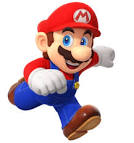
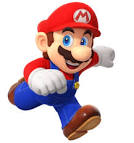

História de Mario Bros.
É uma criação de Shigeru Miyamoto. Em 1981, a Nintendo lançou um videogame para máquinas de fliperama chamado Donkey Kong, no qual Jumpman (nome original de Mario) tinha que resgatar uma princesa capturada por um macaco.
É uma criação de Shigeru Miyamoto. Em 1981, a Nintendo lançou um videogame para máquinas de fliperama chamado Donkey Kong, no qual Jumpman (nome original de Mario) tinha que resgatar uma princesa capturada por um macaco.
